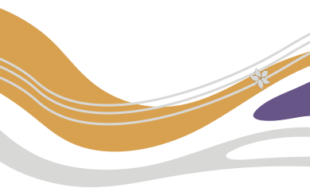

Hello, I’m Xinyan Chen
A Product Designer bridging 5 years of spatial and aesthetic expertise with North American product design— merging pop culture and East Asian aesthetics with rigorous logic to create culturally resonant digital experiences.
